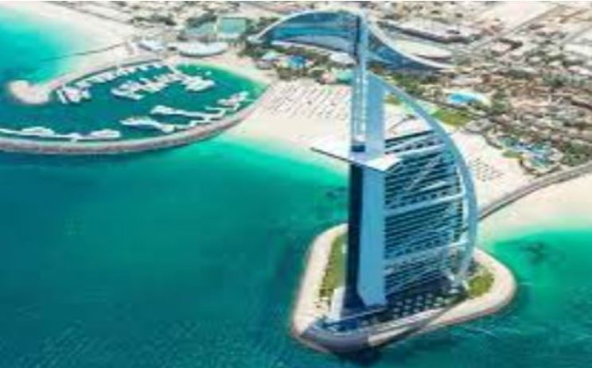
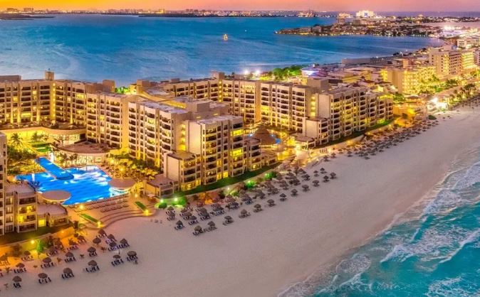
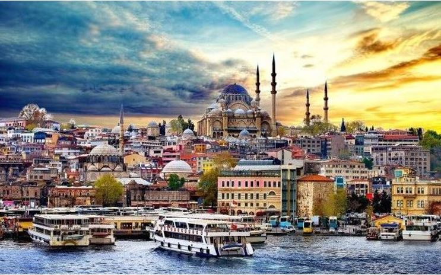
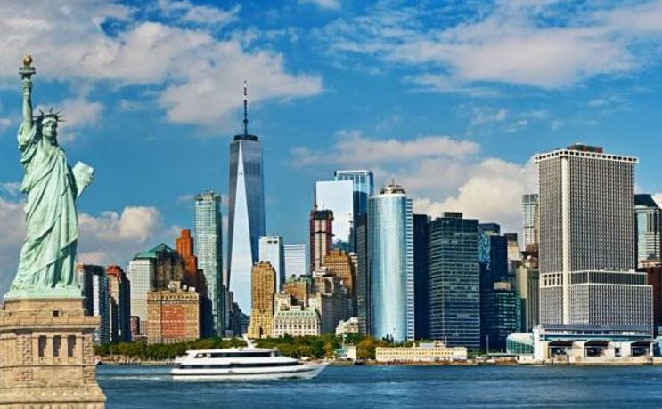
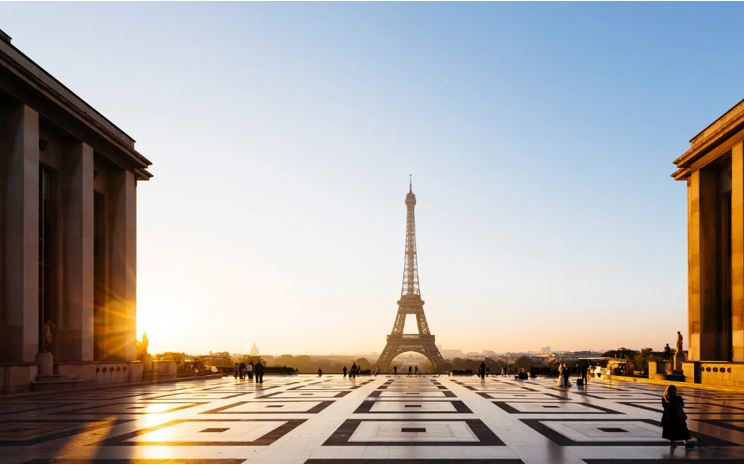
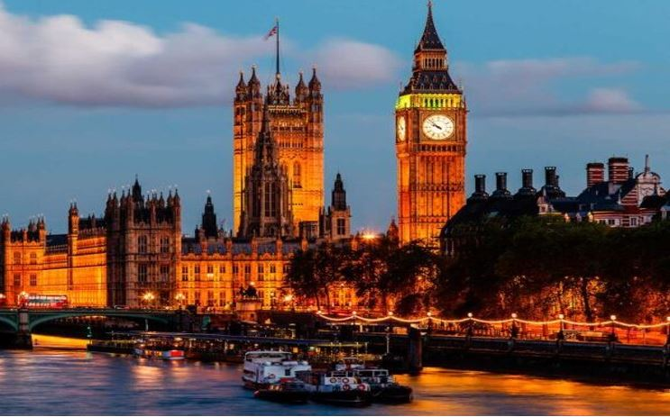

Destino N°1
DUBAI (EAU)
Dubái es una ciudad de la joya dentro de los siete Emiratos Árabes Unidos. La ciudad que ofrece lugares turísticos imprescindibles, Safari por el desierto, cruceros con cenas, los mejores hoteles de 5 estrellas y una diversión exclusiva con todos lujos que caracteriza la ciudad.
Leer más...

Destino N°2
CANCUN (México)
Uno de sus principales atractivos es sin dudar alguna sus playas de arena blanca y el mar turquesa que enamora hasta los más rudos. Cancún posee siete playas Blue Flag, que son las siguientes: Chac Mool, Delfines, Las Perlas, Marlín, Ballenas y El Niño, etc.
Leer más...

Destino N°3
ESTAMBUL (Turquía)
Sin duda cabe decir que Turquía es uno de los significativos países turísticos del mundo.
Cada año atrae a entre 35 y 40 millones de turistas de todas las cuatro esquinas del mundo.
Los países de los que más turistas viajan a Turquía son Alemania, en la primera posición, luego Rusia. Las provincias más visitadas por los turistas son Antalya, Estambul y Muğla.
Hablando en general podemos decir que Turquía es un país multifacético y atrae a sus visitantes por diversas características, y claro, no hay que olvidarse de la extraordinaria hospitalidad de los turcos.
Leer más...

Destino N°4
NUEVA YORK (USA)
Nueva York es uno de los sitios en los cuales el turismo constituye el punto fuerte, albergando gran cantidad de lugares importantes, monumentos y edificios famosos, como por ejemplo la famosísima Estatua de la Libertad, el Edificio Empire State, el Puente de Brooklyn, entre otros, considerados verdaderos símbolos de la ciudad. Antes del trágico 11 de septiembre también lo era el World Trade Center, actualmente conocido como «la Zona Cero», visitada por millones de turistas cada año.
Leer más...

Destino N°5
PARÍS (Francia)
La Torre Eiffel es el símbolo de París, fue construida para la Exposición Universal de París de 1889 y actualmente es el monumento más visitado del mundo. El Museo del Louvre es el más importante del país y uno de los más visitados del mundo, más de ocho millones de personas visitan sus colecciones cada año.
Leer más...

Destino N°6
LONDRES (Reino Unido)
Londres es la capital del Reino Unido, la ciudad cuenta con un aire de grandeza, pues es uno de los centros financieros más importantes de Europa, llena de misterios, y con una larga e interesante historia, atrae a millones de turistas de todas partes del mundo y sirve como residencia temporal para numerosos estudiantes extranjeros.
Leer más...